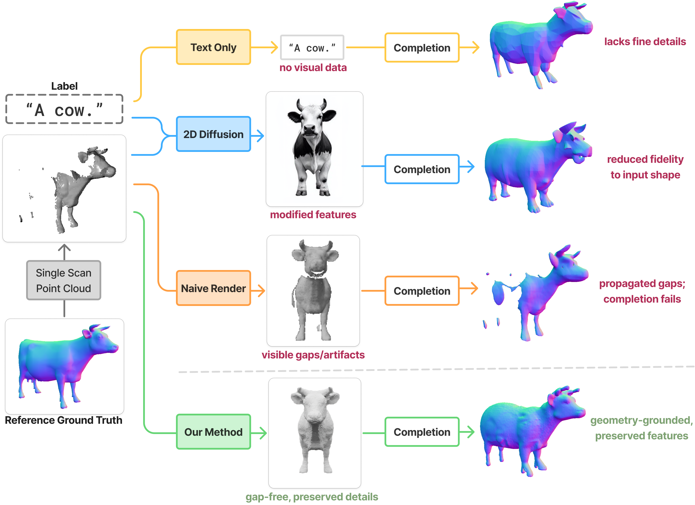
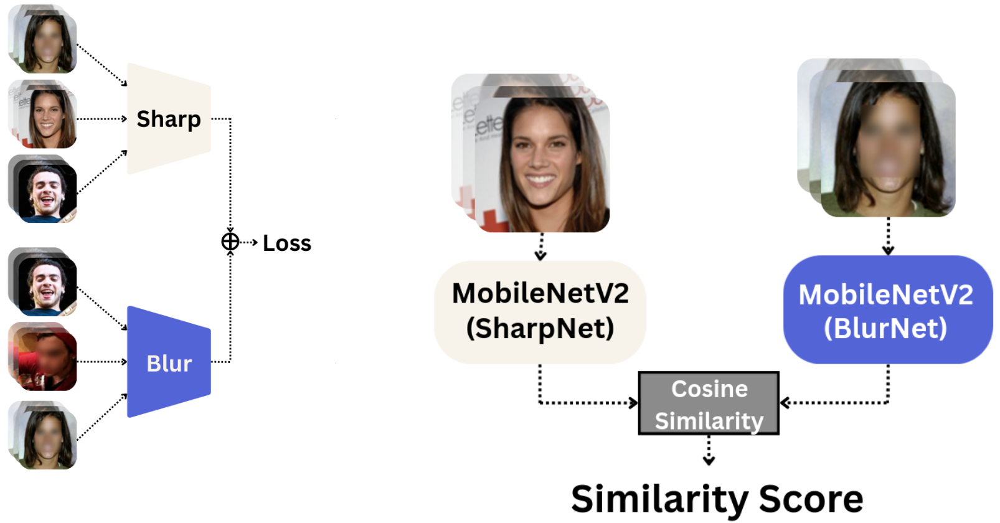
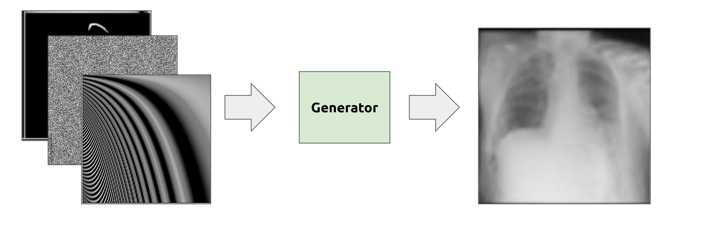

My interests lie in 3D visual computing, deep learning, and robotics. It would be cool to apply these concepts to help and understand people, rather than just show-off to other computer scientists.
Besides academia, I'm a fan of Tetris, fighting fames, and improv theatre.
BoundView: Captionless Point Cloud Completion via Boundary Alignment and Surface Blending

Point cloud completion can be tough, especially when the scanned object is very incomplete. But by finding the right viewpoint, we may better understand what the whole object was supposed to be. I proposed a Boundary Alignment strategy to find such viewpoint, and avoid "propagated gaps" (see figure) when we try to complete the shape using 2D-to-3D methods. (MSc Thesis | GitHub)
Blurred Lines: Does Blurring preserve privacy?

Does Gaussian Blur protect your privacy? In this HackMD blog post, my colleagues and I try to identify for a normal (sharp) image and another blurred image whether they depict the same person by applying triplet loss on two distinct CNNs. Results show it might be possible.
Using Conditional Generative Adversarial Networks for Data Augmentation in Pneumothorax

Classification”
Experimented on GAN architectures in order to generate lung images from poor segmentation inputs for pneumothorax classification. Several experiments on how to integrate positional encoding in Generative Adversarial Networks to generate consistent but dissimilar results. In the end we produce lung images, but unfortunately the output images didn't grasp the concept of pneumothorax. (PDF, GitLab)
Look where you’re going: Classifying drivers' attention through 3D gaze estimation.
I wanted to classify whether a driver is paying attention to the road without requiring thousands of samples, so I leveraged existing 3D gaze estimation models. I trained simple ML models used in a pipeline to classify the gaze vector as 'distracted' or not. (BSc Thesis | GitHub)
Camera-based line follower
I was part of a robotics team, Yapira UFPR . We received the Innovation Award for our image-based line follower in RCX 2023. I've implemented many handcrafted methods to robustly identify the track under inconsistent and adverse lighting condition / framerate.
VRI-GazeNet: 3D Gaze Estimation for Real-time Applications
Gaze estimation models were too heavy and too slow for my project, so I trained my own model using a MobileNetv2 on the Gaze360 dataset. Achieved decent results using a relatively small architecture. PDF | GitHub
Photomosaic from dominant patch color
Replace image patches with other 20x20 .ppm tiles based on dominant colour. GitHub
News
2026.8. I just got my DSAIT master's degree from TU Delft. I'm excited for new opportunities!